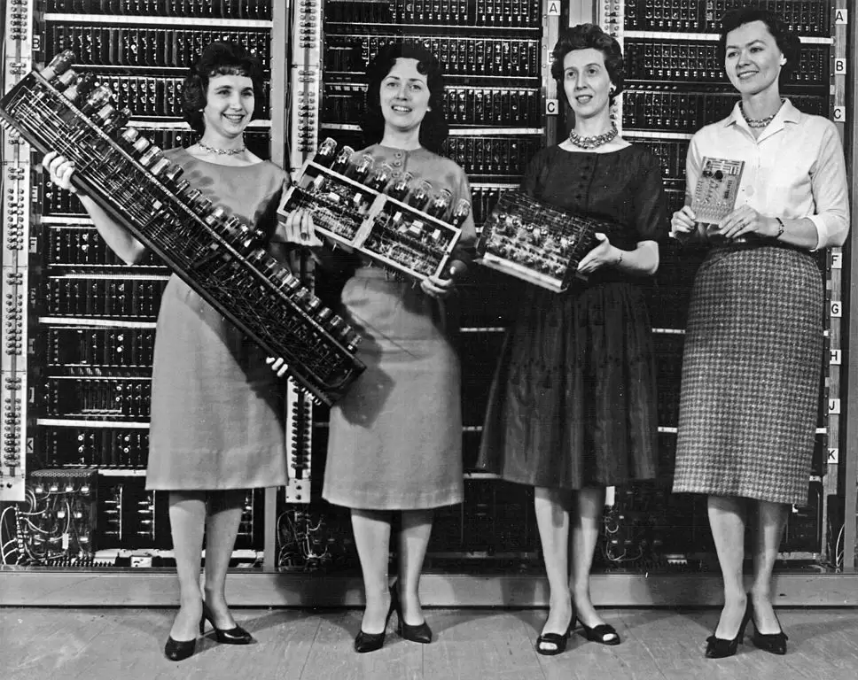

komputer skonstruowany w latach 1943-1945 przez J.P. Eckerta i J.W. Mauchly'ego na Uniwersytecie Pensylwanii w USA. Zaprzestano jego uzywania w 1955 r.
Do roku 1975 uwazany byl za pierwszy elektroniczny komputer na swiecie, jednak teraz o miano to ubiegaja sie rowniez - po odtajnieniu danych brytyjskich - maszyny Colossus oraz niemieckie Konrada Zusego.
Do miana pierwszego elektronicznego komputera na swiecie pretenduje takze komputer ABC (od ang. Atanasoff-Berry Computer), zbudowany w Iowa State University na wydziale Computer Science przez Johna Vincenta Atanasoffa i Clifforda Berry'ego w latach 1937-1942.
komputer skonstruowany w latach 1943-1945 przez J.P. Eckerta i J.W. Mauchly'ego na Uniwersytecie Pensylwanii w USA. Zaprzestano jego uzywania w 1955 r.
Do roku 1975 uwazany byl za pierwszy elektroniczny komputer na swiecie, jednak teraz o miano to ubiegaja sie rowniez - po odtajnieniu danych brytyjskich - maszyny Colossus oraz niemieckie Konrada Zusego.
Do miana pierwszego elektronicznego komputera na swiecie pretenduje takze komputer ABC (od ang. Atanasoff-Berry Computer), zbudowany w Iowa State University na wydziale Computer Science przez Johna Vincenta Atanasoffa i Clifforda Berry'ego w latach 1937-1942.

ENIAC byl bardzo innowacyjny: posiadal wlasciwosc przetwarzania rownoleglego oraz oddzielne funkcjonalnie moduly jednostki arytmetycznej i pamieci.
Mauchly i Eckert opatentowali te konstrukcje, sprzedajac prawa patentowe firmie Sperry Rand.
Firma ta zaczela domagac sie oplat licencyjnych od innych firm, co doprowadzilo do wytoczenia procesu przez Honeywell w celu podwazenia patentu.
Po wieloletnim procesie sadowym, w pazdzierniku 1973 roku, sedzia federalny Earl R. Larson podjal decyzje uniewazniajaca patent ENIAC-a, uznajac ze zapozyczal on rozwiazania z wczesniejszego projektu komputera ABC Johna Vincenta Atanasoffa.